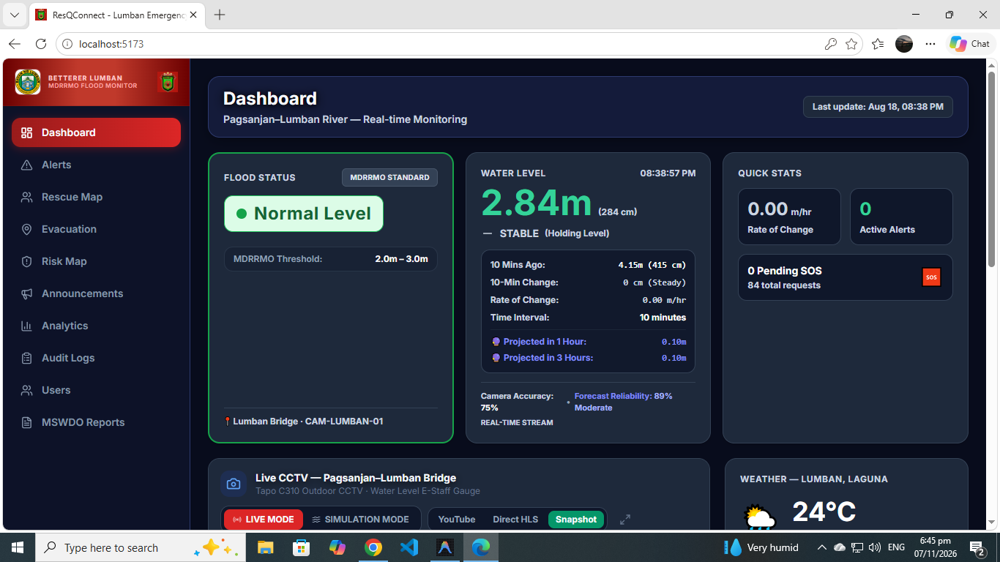
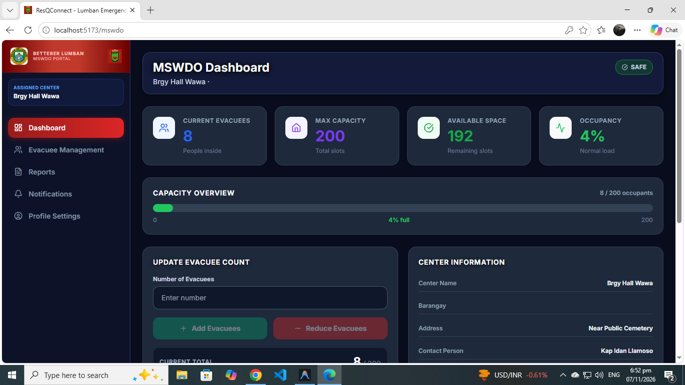

1
Flood Detection Speed & Accuracy
How can the municipality improve the speed and accuracy of flood detection and response during heavy rainfall and power outages using image-processing-based monitoring?
Development of an Image-Processing-Driven Flood Monitoring and Predictive Evacuation System
For the Municipality of Lumban, Laguna
This capstone project develops a system that helps local communities monitor flood risk, analyze visual indicators, and support timely evacuation planning through predictive and data-driven decision support.
The formulation of the Image Processing-Driven Flood Monitoring and Predictive Evacuation System for the Municipality of Lumban, Laguna, is necessitated by the recurrent and destructive flooding experienced in the locality. Positioned adjacent to major water bodies such as Laguna de Bay and the Pagsanjan–Lumban River, the municipality is highly susceptible to rapid rises in water levels triggered by heavy rainfall and typhoons.
How can the municipality improve the speed and accuracy of flood detection and response during heavy rainfall and power outages using image-processing-based monitoring?
How can the system monitor flood conditions in real time and provide automated alerts to support timely evacuation decisions?
How can the integrated system improve coordination among MDRRMO, PNP, BFP, MSWDO, RHU, barangay personnel, and residents during emergency situations?
How do the system’s features such as real-time monitoring, automated flood classification, and predictive evacuation guidance support disaster preparedness and response operations?
This study aims to develop and implement an image processing-driven flood monitoring and predictive evacuation system to enhance disaster preparedness and response in the Municipality of Lumban, Laguna. The system is intended to provide accurate water-level detection, timely forecasting, and efficient evacuation guidance for residents and responders.
To design, develop, test, and evaluate an Image Processing-Driven Flood Monitoring and Predictive Evacuation System with Multi-Agency Emergency Response for the Municipality of Lumban, Laguna, enhancing real-time flood monitoring, early warning advisory, and disaster response coordination.
To design and develop an Image Processing-Driven Flood Monitoring and Predictive Evacuation System for the Municipality of Lumban, Laguna that will integrate secure, user-friendly features across responsive web and mobile platforms.
To test the functionalities of the system in order to verify its performance and reliability across established MDRRMO alert thresholds (Normal, Monitor, Alert, Critical, and Evacuate):
To evaluate the platform's user acceptance and behavioral intention using the Technology Acceptance Model (TAM):
The study used Developmental Research Methodology and descriptive methods to develop and evaluate ResQConnect. System development followed Agile SDLC with input from the MDRRMO and partner agencies.
Consultations with the MDRRMO, barangay officials, PNP, BFP, RHU, and MSWDO.
Set the project scope, timeline, and technical resources.
Plan the system architecture, database schema, and interfaces.
Build system features and computer vision models through Agile sprints.
Simulate real-world disaster scenarios and use black-box testing to verify functions.
Install and introduce the system for MDRRMO operational use.
Gather user feedback through comprehensive TAM evaluation.
Simulation testing of real-world disaster scenarios involved 20 participants. Separately, 10 IT experts conducted black-box functional testing, while 185 residents, barangay officials, and disaster-response agency representatives participated in user evaluation.
Participants tested real-world disaster scenarios.
IT experts tested the system's functionality.
Respondents from seven stakeholder groups.
Total sample size: 185 respondents across municipal agencies and Barangay Wawa
The evaluation questionnaire was based solely on the Technology Acceptance Model (TAM). Responses were analyzed through weighted mean and standard deviation to assess the system's overall acceptability.
Key functionalities developed to support proactive disaster preparedness, early warning, and emergency response operations.
Detects and measures water levels, then classifies them as Normal, Monitor, Alert, Critical, or Evacuate.
Analyzes historical flood data and tracks water-level trends over time.
Forecasts rising water levels based on the observed rate of change in monitored locations.
Recommends timely evacuation actions and safer unflooded route guidance.
Broadcasts early warnings and automated siren alerts to residents and emergency responders.
Sends emergency rescue requests tagged with the sender's live GPS satellite location.
Dispatches, tracks, and coordinates emergency response teams in real time.
Provides an interactive hub for flood monitoring, telemetry, and emergency response operations.
Overview of web portals and mobile applications designed for responders, administrators, and residents.


Evacuation center coordination and support for vulnerable groups.
View screenshots →

Flood alerts, safe-route guidance, and emergency SOS access.
View screenshots →The four-step process for automated flood monitoring, classification, and predictive evacuation.
Captures flood-related images and environmental indicators from monitored areas.
Processes visual data to detect water presence, abnormal conditions, and flood patterns.
Assesses severity and predicts escalation using flood conditions and situational cues.
Recommends response actions and supports timely evacuation when alert levels rise.
Laguna State Polytechnic University • College of Computer Studies • BS Information Technology
Capstone Adviser
Faculty Mentor
.png)
Project Leader
Research & Communication
Quality Assurance
Web & Mobile
Full Stack Developer
Research & Communication
UX Developer